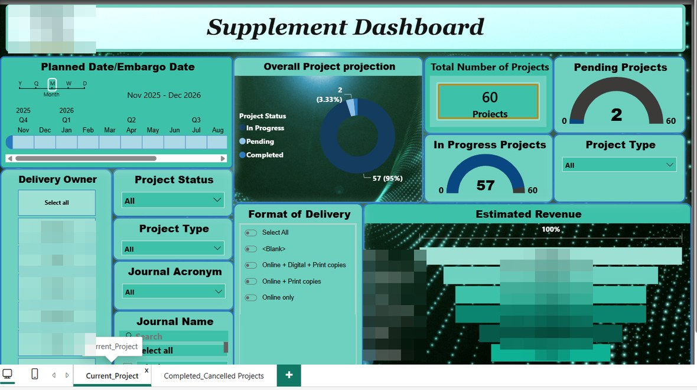

Data & delivery
Delivery visibility system
Built Power BI reporting that turns project data into a clearer operational and leadership view.
View dashboard work →I'm Vignesh (people call me VB), a multifaceted-curious professional who can combine operational execution, analytics, automation, and responsible AI to make global workflows more visible, reliable, and scalable.

Examples of how I turn manual work, scattered information, and process risk into systems people can use and trust.
Built Power BI reporting that turns project data into a clearer operational and leadership view.
View dashboard work →
Created a single source of truth for tools, guidance, documents, updates, and team enablement.
Explore the hub →
Translated complex process updates into visual, easy-to-use communication for global teams.
See the visual work →Built the HTML workflow end to end, including Power Automate reminders, JSON-generation protocol, SOP, OneDrive materials, and MS Forms feedback loop.
HTMLPower AutomateJSONSOPIntegrated FTX delivery mode into the Abstract Scheduler with an Elsevier-aligned interface, while completing the Article Status Manager.
Abstract SchedulerArticle Status ManagerUXCompleted structured Knowledge Transfer and ownership transfer across journal supplements, Future Skills, Spanish Supplements, and the Power BI Reporting Pillar.
Knowledge TransferSharePointPower BIGovernanceI started out as an electronics & communication engineer and discovered, along the way, that I wanted to understand more than circuits — I became fascinated by people, processes, and the systems that hold them together. So I kept learning: Psychology, Healthcare Management, Yoga for Human Excellence, and now Life Sciences and data tools — each picked up out of plain curiosity and a refusal to settle for "good enough."
Now you know the mix of lens that I bring on the professional front. My career moved from Buyer/Customer and Merchant/Seller/Vendor facing support roles in fortune 100 marketplace industry along with the compliance and fraud detection roles at Groupon and Amazon to Author and reviewer support and delivery governance with innovation, AI assistance and project management at Elsevier, and the two sides now reinforce each other: I build the automation, and I build the controls that keep it trustworthy.
Today, as a Delivery Owner in Global Pharma Operations, I own end-to-end delivery of global publishing projects with a 100% on-time record — while spearheading the work underneath it: an automated system for a tool-free process, Power Automate flows, Power BI dashboards for delivery and leadership views, and SOP/RASCI frameworks that make the whole thing audit-ready. I also serve as a Generative AI skill development SME, helping teams adopt AI responsibly.
Decisions grounded in CSAT, SLA, and engagement signals — measured, never guessed.
SOPs and RASCI frameworks that make good outcomes repeatable and audit-ready.
Teams trained, trusted, and engaged enough to own the result themselves.
From frontline support, to fraud analyst & quality investigation, to owning projects and the systems beneath it.
Operations & Delivery Owner within Global Pharma Operations — owning end-to-end supplement publishing alongside operational integrity, audit compliance & risk assessment, and operating-model transition across high-volume workflows.
My primary customer segment was authors and reviewers — handling submission requirements, process and status queries, and editorial decisions over email, with customer delight as a measurable goal: 98% CSAT against a 95% target as an individual contributor, while covering absences and backlogs so the queue stayed healthy.
Leading and key contributor across three pillars.
My Amazon journey ran from Selling Partner Support through to Product Quality — Authentication. I started on NA/UK/EU Selling Partner email queues, progressed to SPS Mentor through multiple interview rounds, and moved permanently into Authentication via the pandemic BCP pilot — based on performance.
Where my customer-operations foundation was built — orders, payments, account management, and refunds over live chat and email across a high-volume e-commerce marketplace, growing from associate to Senior Customer Support Executive and SME.
Power BI dashboards created for delivery tracking and leadership views.


Posters I designed to circulate process updates and bite-size learning across global teams.


Founder & owner of "The Researcher Support Hub" — a single-point SharePoint site linking tools, knowledge, and resources for global RS teams.


A branded publication deadline scheduling tool that converts delivery inputs into a computed timeline and supports operational planning.
An end-to-end supplement status and stakeholder communication tool covering project details, status-file import, reminders, email drafting, and configured-section tracking.
Engineering, psychology, healthcare, human excellence and Life Sciences — the range behind a process-and-people approach.
If you're working on operations transformation, automation, risk intelligence, Generative AI, Clinical Diagnosis and therapeutic methodology, Psychology and Psychiatry, I'd be glad to connect.